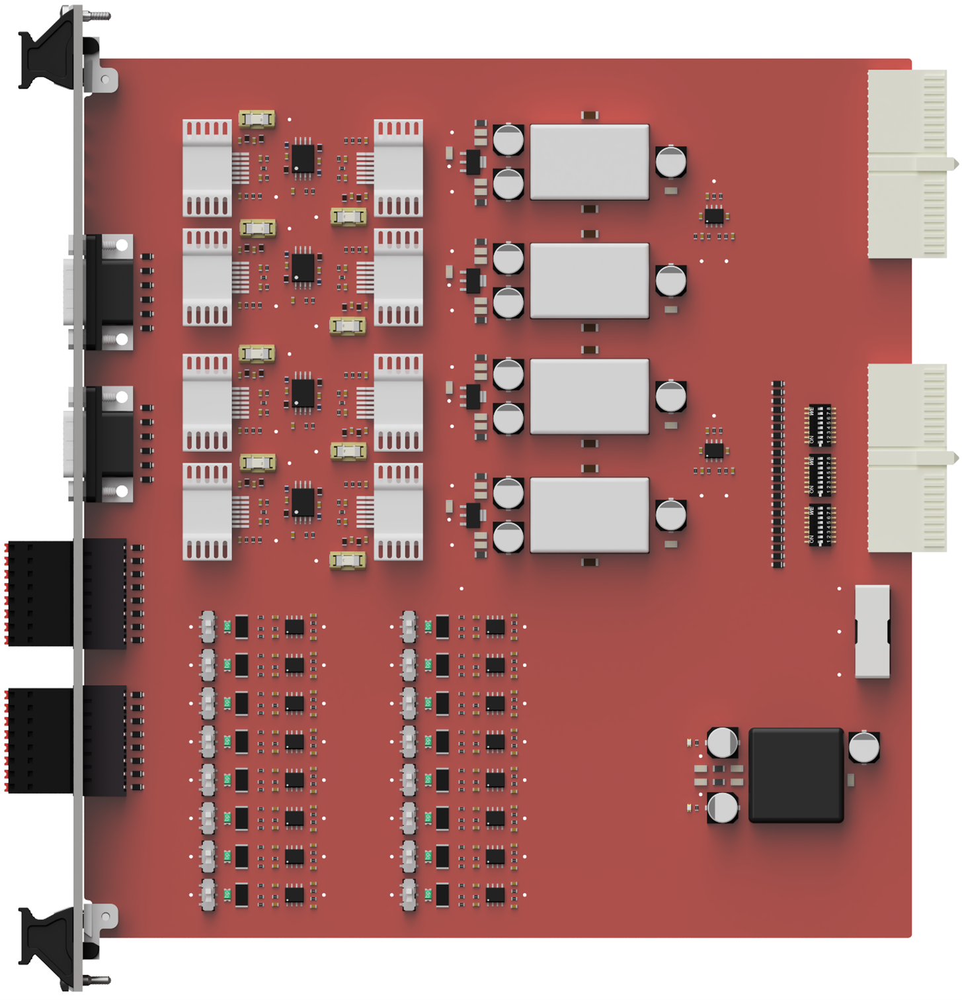
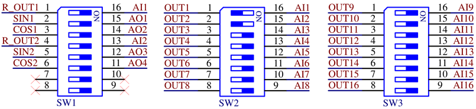
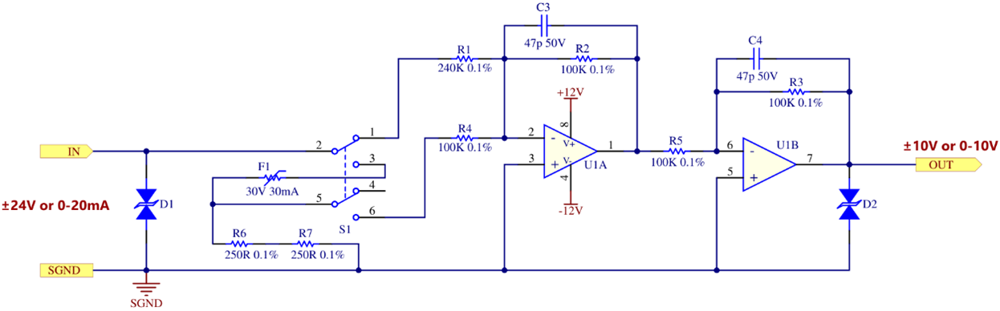
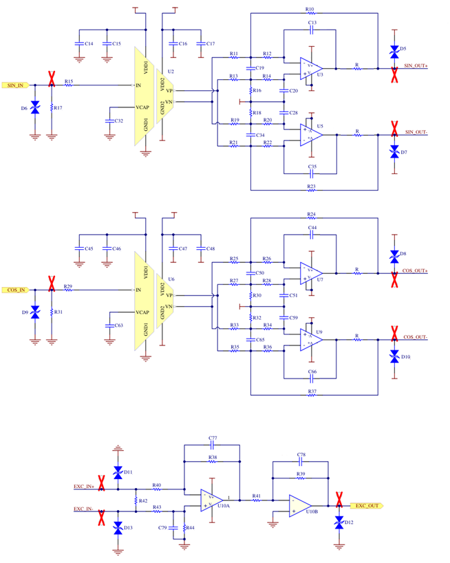

Dual Resolver card
Description of the Dual Resolver card for HIL Connect hardware

The Dual Resolver Card is a modular HIL Connect card that emulates the behavior of up to two resolvers. The card has up to 16 analog input channels.
Dual Resolver card revisions
| Code | Revision | Part number |
|---|---|---|
| MX | 1.0 | 25379 |
Dual Resolver card hardware specification
| Parameter | SIN and COS Value | EXC Value |
|---|---|---|
| Signal Type | Fully isolated differential output | Non-isolated differential input |
| Number of channels | 2 | |
| Input signal range | 7.071 VRMS (single-ended, from HIL side) | 14.142 VRMS (differential) |
| Output signal range | 14.142 VRMS (fully isolated differential) | 7.071 VRMS (single-ended, from HIL side) |
| Resistance | ~20 Ω channel resistance | ~1 kΩ input resistance |
| Gain | 2 | 0.5 |
| Max current per channel | 200 mA | - |
| Nominal current per channel | 50 mA | - |
| Max output resistance load at max voltage output before distortion | 600 Ω @ 14.142 VRMS | N/A |
| Input to output propagation delay | 5 µs @ ±20 V; 10 kHz | |
| Bandwidth (-3dB) | 100 kHz | |
| Max capacitive load | 33 nF @ 100 kHz | |
| Isolation | Yes | No |
| Parameter | Value |
|---|---|
| Type | Single-ended |
| Gain | 0.4166 |
| Number of channels | 16 (see note) |
| Input signal range | ±24 V or ±20 mA (selected with a switch) |
| Output signal range | ±10 V |
| Bandwidth (-3dB) | DC to 100 kHz |
| Max capacitive load | 33 nF @ 100 kHz |
| Isolation | No |
Configurability
In the standard configuration, the Dual Resolver Card is configured to operate in a mode where four analog outputs (AO1, AO2, AO3 and AO4) and two analog inputs (AI1 and AI2) are reserved for use with two resolver channels. Thus, limiting the use of these analog I/O channels for different purposes.
Configuration switches are available on the board and can be reconfigured if different needs arise, as shown in Figure 2. On switches SW1 and SW3, all positions are in the ON position, as well as on switch SW2 except positions 1 and 2 which are in the OFF position (AI1 and AI2), which allows them to be used for resolver channels.

Analog input channels provide additional configuration options, namely the selection of the input type between the ±24 V and ±20 mA ranges. This option is provided for each channel separately via dedicated switches (S1 in schematic) on the board.
Simplified Schematics
Figure 3 and Figure 4 show simplified schematics of the Resolver Stage channel and the Analog Input channel, respectively.


Dual Resolver card connector data
| Parameter | Value |
|---|---|
| Connector panel | |
| X1 and X2 Connector Type | D-Sub 9 |
| X3 and X4 PCB Connector part number | 1289320000 |
| X3 and X4 Mating Connector part number | 1277530000 |
Dual Resolver card pinouts
| Connector | Pin | Input Rating | Output Rating | Related HIL channel |
|---|---|---|---|---|
| X1 | 1 | - | - | NC |
| X1 | 2 | - | - | NC |
| X1 | 3 | 7.071 VRMS (single-ended, from HIL side) | 14.142 VRMS (fully isolated differential) | SIN_OUT+ |
| X1 | 4 | 7.071 VRMS (single-ended, from HIL side) | 14.142 VRMS (fully isolated differential) | COS_OUT+ |
| X1 | 5 | 14.142 VRMS (differential) | 7.071 VRMS (single-ended, from HIL side) | EXC_IN+ |
| X1 | 6 | - | - | NC |
| X1 | 7 | 7.071 VRMS (single-ended, from HIL side) | 14.142 VRMS (fully isolated differential) | SIN_OUT- |
| X1 | 8 | 7.071 VRMS (single-ended, from HIL side) | 14.142 VRMS (fully isolated differential) | COS_OUT- |
| X1 | 9 | 14.142 VRMS (differential) | 7.071 VRMS (single-ended, from HIL side) | EXC_IN- |
| Connector | Pin | Input Rating | Output Rating | Related HIL channel |
|---|---|---|---|---|
| X2 | 1 | - | - | NC |
| X2 | 2 | - | - | NC |
| X2 | 3 | 7.071 VRMS (single-ended, from HIL side) | 14.142 VRMS (fully isolated differential) | SIN_OUT+ |
| X2 | 4 | 7.071 VRMS (single-ended, from HIL side) | 14.142 VRMS (fully isolated differential) | COS_OUT+ |
| X2 | 5 | 14.142 VRMS (differential) | 7.071 VRMS (single-ended, from HIL side) | EXC_IN+ |
| X2 | 6 | - | - | NC |
| X2 | 7 | 7.071 VRMS (single-ended, from HIL side) | 14.142 VRMS (fully isolated differential) | SIN_OUT- |
| X2 | 8 | 7.071 VRMS (single-ended, from HIL side) | 14.142 VRMS (fully isolated differential) | COS_OUT- |
| X2 | 9 | 14.142 VRMS (differential) | 7.071 VRMS (single-ended, from HIL side) | EXC_IN- |
| Connector | Pin | Input Rating | Output Rating | Related HIL channel |
|---|---|---|---|---|
| X3 | 1 | ±24 V or ±20 mA (selected with a switch) | ±10 V | AI1 |
| X3 | 2 | ±24 V or ±20 mA (selected with a switch) | ±10 V | AI2 |
| X3 | 3 | ±24 V or ±20 mA (selected with a switch) | ±10 V | AI3 |
| X3 | 4 | ±24 V or ±20 mA (selected with a switch) | ±10 V | AI4 |
| X3 | 5 | ±24 V or ±20 mA (selected with a switch) | ±10 V | AI5 |
| X3 | 6 | ±24 V or ±20 mA (selected with a switch) | ±10 V | AI6 |
| X3 | 7 | ±24 V or ±20 mA (selected with a switch) | ±10 V | AI7 |
| X3 | 8 | ±24 V or ±20 mA (selected with a switch) | ±10 V | AI8 |
| X3 | 9..16 | - | GND | GND |
| Connector | Pin | Input Rating | Output Rating | Related HIL channel |
|---|---|---|---|---|
| X4 | 1 | ±24 V or ±20 mA (selected with a switch) | ±10 V | AI9 |
| X4 | 2 | ±24 V or ±20 mA (selected with a switch) | ±10 V | AI10 |
| X4 | 3 | ±24 V or ±20 mA (selected with a switch) | ±10 V | AI11 |
| X4 | 4 | ±24 V or ±20 mA (selected with a switch) | ±10 V | AI12 |
| X4 | 5 | ±24 V or ±20 mA (selected with a switch) | ±10 V | AI13 |
| X4 | 6 | ±24 V or ±20 mA (selected with a switch) | ±10 V | AI14 |
| X4 | 7 | ±24 V or ±20 mA (selected with a switch) | ±10 V | AI15 |
| X4 | 8 | ±24 V or ±20 mA (selected with a switch) | ±10 V | AI16 |
| X4 | 9..16 | - | GND | GND |